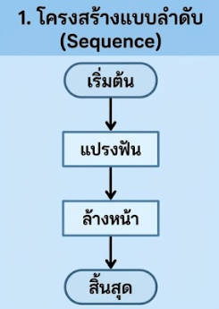
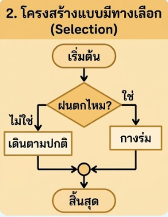
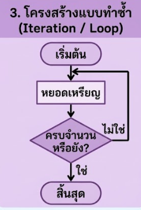

- 1 อธิบายขั้นตอนการออกแบบอัลกอริทึม การใช้รหัสลำลอง (Pseudocode) และผังงาน (Flowchart) ในการแก้ปัญหาได้
- 2 ออกแบบและจัดเรียงสัญลักษณ์ผังงาน (Flowchart) คำนวณค่าโดยสารรถเมล์ตามเงื่อนไขที่กำหนดได้ถูกต้อง
- 3 มีความมุ่งมั่นและแก้ปัญหาอย่างเป็นขั้นตอนผ่านกิจกรรม Interactive
Algorithm Design คืออะไร?
การออกแบบอัลกอริทึม คือ การวางลำดับขั้นตอนวิธีแก้ปัญหาอย่างชัดเจน เป็นลำดับขั้น (Step-by-step) เพื่อให้คอมพิวเตอร์หรือคนทำงานตามได้ถูกต้อง
1. รับค่าระยะทาง (dist)
2. ถ้า dist <= 5 ให้ คิดราคา 10 บาท
3. ถ้า dist > 5 ให้ คิดราคา 10 + ((dist - 5) * 2) บาท
สัญลักษณ์ผังงานที่สำคัญ (Flowchart Symbols)
ขั้นตอนวิธี (Algorithm) คือ ชุดของลำดับขั้นตอนคำสั่งที่ชัดเจน เป็นขั้นเป็นตอน และสามารถปฏิบัติตามได้จริง เพื่อนำไปสู่ผลลัพธ์หรือการแก้ปัญหาที่ต้องการ ไม่ว่าจะเป็นการแก้ปัญหาในชีวิตประจำวันหรือการสั่งให้คอมพิวเตอร์ประมวลผล
แต่ละขั้นตอนต้องสื่อความหมายเดียว ไม่คลุมเครือ เพื่อให้ใครนำไปทำตามก็ได้ผลลัพธ์เหมือนกัน
ขั้นตอนต้องเรียงลำดับจากจุดเริ่มต้น มีการประมวลผลที่ต่อเนื่อง และมีจุดสิ้นสุดที่ชัดเจน
เมื่อปฏิบัติตามครบทุกขั้นตอน จะต้องได้ผลลัพธ์หรือคำตอบที่ตอบสนองต่อเป้าหมายของปัญหา
โครงสร้างแบบลำดับ (Sequence)
การทำงานเรียงจากขั้นตอนบนลงล่างทีละขั้นตอนตามลำดับ ไม่มีการข้ามหรือย้อนกลับ เช่น การใช้ตู้โทรศัพท์ หรือการปลูกต้นไม้

โครงสร้างแบบมีทางเลือก (Selection)
มีการตรวจสอบเงื่อนไขเพื่อตัดสินใจเลือกทำงาน เช่น ถ้าฝนตกให้กางร่ม ถ้าไม่ตกให้เดินตามปกติ

โครงสร้างแบบทำซ้ำ (Iteration / Loop)
การทำงานซ้ำขั้นตอนเดิมตามเงื่อนไข เช่น การหยอดเหรียญซ้ำไปเรื่อยๆ จนกว่าจะครบตามจำนวนค่าโดยสาร

เกมด่านภารกิจพิชิตผังงาน (Flowgorithm Challenge)
เกมเก็บคะแนนท้ายคาบ 5 ภารกิจ • ผ่านแต่ละด่านได้รับ +2 คะแนน สะสมสูงสุด 10 คะแนนเต็ม พร้อมบันทึกคะแนนเข้าสู่ระบบอัตโนมัติ!
เล่นผ่านด่านสะสมคะแนน: +2 คะแนนต่อด่าน (รวม 10 คะแนน)
ระบบจะส่งคะแนนเข้า Google Sheets อัตโนมัติทุกครั้งที่ผ่านแต่ละด่าน
กำลังโหลด...
กำลังโหลดรายละเอียดโจทย์...
> สร้างผังงานทางซ้ายแล้วกดปุ่ม "รันผังงาน (Run)"...
ทำความเข้าใจเกี่ยวกับการเขียนอัลกอริทึมและผังงาน (Flowchart) เพื่อนำไปประยุกต์ใช้ในการแก้ปัญหา